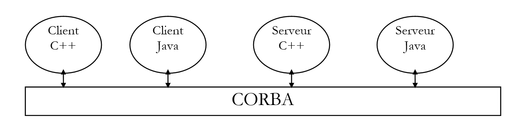
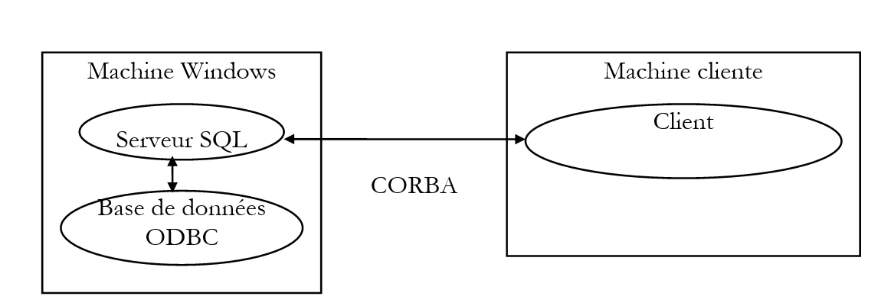

10. Erstellen verteilter CORBA-Anwendungen
10.1. Einführung
Im vorigen Kapitel haben wir gesehen, wie man mit dem RMI-Paket verteilte Anwendungen in Java erstellt. Hier behandeln wir dasselbe Problem, diesmal unter Verwendung der CORBA-Architektur. CORBA (Common Object Request Broker Architecture) ist eine Spezifikation, die von der OMG (Object Management Group) definiert wurde, einem Zusammenschluss vieler Unternehmen der IT-Branche. CORBA definiert einen „Software-Bus“, auf den Anwendungen zugreifen können, die in verschiedenen Sprachen geschrieben sind:

Wir werden sehen, dass die Erstellung einer verteilten Anwendung mit CORBA der bei Java RMI verwendeten Methode ähnelt: Die Konzepte sind vergleichbar. CORBA bietet den Vorteil der Interoperabilität mit Anwendungen, die in anderen Sprachen geschrieben sind.
10.2. Der Entwicklungsprozess für eine CORBA-Anwendung
10.2.1. Einführung
Um eine CORBA-Client-Server-Anwendung zu entwickeln, gehen wir wie folgt vor:
- Schreiben der Server-Schnittstelle mit IDL (Interface Definition Language)
- Generieren der „Skeleton“- und „Stub“-Klassen des Servers
- Schreiben des Servers
- Schreiben des Clients
- Kompilieren aller Klassen
- Starten eines CORBA-Dienstverzeichnisses
- Starten des Servers
- Starten des Clients
Als erstes Beispiel verwenden wir den Echo-Server, der bereits im RMI-Kontext verwendet wurde. So kann der Leser die Unterschiede zwischen den beiden Methoden erkennen.
Die Anwendung wurde mit JDK 1.2 getestet.
10.2.2. Schreiben der Server-Schnittstelle
Wie bei Java RMI wird der Server durch seine Schnittstelle in Bezug auf den Client definiert. Während die Klassen, die den Server implementieren, vom Client nicht benötigt werden, sind diejenigen seiner Schnittstelle erforderlich. Während Java RMI eine Java-Schnittstelle verwendete, um die „Skeleton“- und „Stub“-Klassen des Servers zu generieren, erfordert die Java-CORBA-Architektur, dass die Schnittstelle in einer anderen Sprache als Java beschrieben wird. Diese Schnittstelle generiert mehrere Klassen, von denen einige vom Client und andere vom Server verwendet werden.
Die Beschreibung der Echo-Schnittstelle lautet wie folgt:
Die Schnittstellenbeschreibung wird in einer echo.idl-Datei gespeichert. Sie ist in der IDL (Interface Definition Language) der OMG geschrieben. Um verwendet werden zu können, muss sie von einem Programm geparst werden, das Quelldateien in der Sprache generiert, die zur Entwicklung der CORBA-Anwendung verwendet wird. Hier verwenden wir das Programm idltojava.exe, das die erforderlichen .java-Quelldateien für die Anwendung auf Basis der vorherigen Schnittstelle generiert. Das Programm idltojava.exe ist nicht im JDK enthalten. Es kann von der Sun-Website unter http://java.sun.com heruntergeladen werden.
Betrachten wir einige Zeilen der vorherigen IDL-Schnittstelle:
entspricht dem **Java-Paket echo**. Durch das Kompilieren der Schnittstelle wird das Java-Paket *echo* generiert, d. h. ein Verzeichnis, das Java-Klassen enthält.
entspricht der **Java-Schnittstelle iSrvEcho**. Es wird eine Java-Schnittstelle generiert.
entspricht der Java-Anweisung **String echo(String msg)**. Die Typen in der IDL-Sprache entsprechen nicht genau denen in der Java-Sprache. Die Entsprechungen werden später in diesem Kapitel erläutert. In der IDL-Sprache können die Parameter einer Funktion Eingabe- (**in**), Ausgabe- (**out**) oder Eingabe-Ausgabe-Parameter (**inout**) sein. Hier erhält die echo-Methode einen Eingabeparameter *msg,* der ein String ist, und gibt als Ergebnis einen String zurück.
Die vorstehende Schnittstelle ist die unseres Echo-Servers. Zur Erinnerung: Eine Remote-Schnittstelle beschreibt die Methoden des Serverobjekts, auf die Clients zugreifen können. Hier steht den Clients nur die echo-Methode zur Verfügung.
10.2.3. Kompilieren der IDL-Schnittstelle des Servers
Sobald die Server-Schnittstelle definiert ist, generieren wir die entsprechenden Java-Dateien.
E:\data\java\corba\ECHO>dir *.idl
ECHO IDL 78 15/03/99 13:56 ECHO.IDL
E:\data\java\corba\ECHO>d:\javaidl\idltojava.exe -fno-cpp echo.idl
Die Option -fno-cpp wird verwendet, um anzugeben, dass kein Präprozessor verwendet werden soll (am häufigsten bei C/C++). Durch das Kompilieren der Datei echo.idl wird ein Unterverzeichnis „echo“ erstellt, das die folgenden Dateien enthält:
E:\data\java\corba\ECHO>dir echo
_ISRVE~1 JAV 1 095 17/03/99 17:19 _iSrvEchoStub.java
ISRVEC~1 JAV 311 17/03/99 17:19 iSrvEcho.java
ISRVEC~2 JAV 825 17/03/99 17:19 iSrvEchoHolder.java
ISRVEC~3 JAV 1 827 17/03/99 17:19 iSrvEchoHelper.java
_ISRVE~2 JAV 1 803 17/03/99 17:19 _iSrvEchoImplBase.java
Die Datei iSrvEcho.java ist die Java-Datei, die die Server-Schnittstelle beschreibt:
/*
* File: ./ECHO/ISRVECHO.JAVA
* From: ECHO.IDL
* Date: Mon Mar 15 13:56:08 1999
* By: D:\JAVAIDL\IDLTOJ~1.EXE Java IDL 1.2 Aug 18 1998 16:25:34
*/
package echo;
public interface iSrvEcho
extends org.omg.CORBA.Object, org.omg.CORBA.portable.IDLEntity {
String echo(String msg)
;
}
Wir sehen, dass dies fast eine wortwörtliche Übersetzung der IDL-Schnittstelle ist. Wenn Sie neugierig genug sind, sich den Inhalt der anderen .java-Dateien anzusehen, werden Sie komplexere Dinge finden. Hier ist, was die Dokumentation über die Rolle dieser verschiedenen Dateien sagt:
die Server-Schnittstelle
implementiert die oben genannte iSrvEcho-Schnittstelle. Es handelt sich um eine abstrakte Klasse, das „Gerüst“ des Servers, das dem Server die von der verteilten Anwendung benötigte CORBA-Funktionalität bereitstellt.
Dies ist der Server-„Stub“, den der Client verwenden wird. Er stellt dem Client die CORBA-Funktionalität zur Verfügung, die für den Zugriff auf den Server erforderlich ist.
Stellt die Methoden bereit, die zur Verwaltung von CORBA-Objektreferenzen benötigt werden
Stellt die Methoden bereit, die zur Verwaltung der Eingabe- und Ausgabeparameter der Schnittstellenmethoden benötigt werden.
10.2.4. Kompilieren der aus der IDL-Schnittstelle generierten Klassen
Es empfiehlt sich, die vorangegangenen Klassen zu kompilieren. In einem anderen Beispiel werden wir sehen, dass hier Fehler erkannt werden können, die durch eine fehlerhafte Ausführung des idltojava-Generators verursacht wurden. Hier läuft alles reibungslos, und nach der Kompilierung befinden sich die folgenden Dateien im Verzeichnis des echo-Pakets:
E:\data\java\corba\ECHO\echo>dir
_ISRVE~1 JAV 1 095 17/03/99 17:19 _iSrvEchoStub.java
ISRVEC~1 JAV 311 17/03/99 17:19 iSrvEcho.java
ISRVEC~2 JAV 825 17/03/99 17:19 iSrvEchoHolder.java
ISRVEC~3 JAV 1 827 17/03/99 17:19 iSrvEchoHelper.java
_ISRVE~2 JAV 1 803 17/03/99 17:19 _iSrvEchoImplBase.java
_ISRVE~1 CLA 2 275 18/03/99 11:25 _iSrvEchoImplBase.class
_ISRVE~2 CLA 1 383 18/03/99 11:25 _iSrvEchoStub.class
ISRVEC~1 CLA 251 18/03/99 11:25 iSrvEcho.class
ISRVEC~2 CLA 2 078 18/03/99 11:25 iSrvEchoHelper.class
ISRVEC~3 CLA 858 18/03/99 11:25 iSrvEchoHolder.class
10.2.5. Server-Implementierung
10.2.5.1. Implementierung der iSrvEcho-Schnittstelle
Wir haben die iSrvEcho-Schnittstelle zuvor definiert. Nun werden wir die Klasse schreiben, die diese Schnittstelle implementiert. Sie wird von der Klasse _iSrvEchoImplbase.java abgeleitet, die, wie oben erwähnt, die iSrvEcho-Schnittstelle bereits implementiert.
// imported packages
import echo.*;
// class implementing remote echo
public class srvEcho extends _iSrvEchoImplBase{
// method performing the echo
public String echo(String msg){
return "[" + msg + "]";
}// fine echo
}// end of class
Der Code ist selbsterklärend. Diese Klasse ist in der Datei srvEcho.java im übergeordneten Verzeichnis des iSrvEcho-Interface-Pakets gespeichert.
Sie können ihn kompilieren, um dies zu überprüfen:
E:\data\java\corba\ECHO>j:\jdk12\bin\javac srvEcho.java
E:\data\java\corba\ECHO>dir
ECHO IDL 78 15/03/99 13:56 ECHO.IDL
SRVECH~1 CLA 488 18/03/99 11:30 srvEcho.class
SRVECH~1 JAV 252 15/03/99 14:02 srvEcho.java
ECHO <REP> 17/03/99 17:19 echo
10.2.5.2. Schreiben der Server-Erstellungsklasse
Wie bei einer RMI-Client-Server-Anwendung muss ein CORBA-Server in einem Verzeichnis registriert werden, damit er für Clients zugänglich ist. Es ist dieses Registrierungsverfahren, das sich auf der Entwicklungsebene je nachdem unterscheidet, ob Sie eine CORBA- oder eine RMI-Anwendung haben. Hier ist das Verfahren für den Echo-CORBA-Server, der in der Datei serverEcho.java registriert ist:
// imported packages
import echo.*
; import org.omg.CosNaming.
*; import org.omg.CosNaming.NamingContextPackage
.*; import org.omg.CORB
A.*; //----------- class serveu
rEcho public class serveu
rEcho{ // ------- main: launches the ech
o server // syntax pg machineAnnuaire portAnnuaire n
omService // machine: machine supporting CORBA
directory // port: directory port
CORBA // nomService: name of the service t
o be registered public static void
main(String arg[]){ // are th
e arguments there?
if(arg.length!=3){ System.err.println("Syntaxe : pg machineAnnuaire por
tAnnuaire nomSe
r
vice"); System.exit(1); }
// retrieve the argu
ments String machi
ne=arg[0]; String port=arg[1]; String nomService=arg[2];
try{
// you need a CORBA object to work
String[] initORB={"-ORBInitialHost",machine,"-ORBInitialPort",port};
ORB orb=ORB.init(initORB,null);
// put the service in the service directory
// it will be called srvEcho
org.omg.CORBA.Object objRef=
orb.resolve_initial_references("NameService");
NamingContext ncRef=NamingContextHelper.narrow(objRef);
NameComponent nc= new NameComponent(nomService,"");
NameComponent path[]={nc};
// create the server and associate it with the srvEcho service
srvEcho serveurEcho=new srvEcho();
ncRef.rebind(path,serveurEcho);
orb.connect(serveurEcho);
// follow-up
System.out.println("Serveur d'écho prêt");
// waiting for customer requests
java.lang.Object sync=new java.lang.Object();
synchronized(sync){
sync.wait();
}
} catch(Exception e){
// there has been an error
System.err.println("Erreur " + e);
e.printStackTrace(System.err);
}
}// hand
}// serveurEcho
Im Folgenden skizzieren wir die Grundlagen zum Starten des Servers, ohne auf Details einzugehen, die auf den ersten Blick komplex erscheinen mögen. Es ist wichtig, sich die Kernpunkte aus dem vorherigen Beispiel zu merken, da sie in jedem CORBA-Server vorkommen.
10.2.5.2.1. Serverparameter
Ein CORBA-Server muss sich bei einem Verzeichnisdienst registrieren, der auf einem bestimmten Rechner und Port läuft. Unsere Anwendung erhält diese beiden Informationen als Parameter. Der registrierte Dienst muss einen Namen haben, der als dritter Parameter angegeben wird.
10.2.5.2.2. Erstellen des CORBA-Verzeichnisdienst-Zugriffsobjekts
Um auf den Verzeichnisdienst zuzugreifen und unseren Echo-Server zu registrieren, benötigen wir ein Objekt namens ORB (Object Request Broker), das über die folgende Klassenmethode abgerufen wird:
Args : tableau de paires de chaînes de caractères, chaque paire étant de la forme (paramètre,valeur)
Prop : propriétés de l’application
Das Beispiel verwendet die folgende Sequenz, um das ORB-Objekt zu erhalten:
String[] initORB={"-ORBInitialHost",machine,"-ORBInitialPort",port};
ORB orb=ORB.init(initORB,null);
Die verwendeten (Parameter, Wert)-Paare lauten wie folgt:
("-ORBInitialHost",machine) : ce couple précise la machine ou opère l’annuaire des services CORBA, ici la machine passée en paramètre au serveur.
("-ORBInitialPort",port ) : ce couple précise le port ou opère l’annuaire des services CORBA, ici le port passé en paramètre au serveur.
Der zweite Parameter der init-Methode wird auf null gesetzt. Wäre auch der erste Parameter auf null gesetzt worden, wäre das verwendete (Maschine,Port)-Paar das Standardpaar (localhost,900) gewesen.
10.2.5.2.3. Registrierung des Servers im CORBA-Dienstverzeichnis
Die Registrierung des Servers im Verzeichnis erfolgt mit den folgenden Schritten:
// put the service in the service directory //
it will be called srvEcho
org.omg.CORBA.Object o
b jRef= orb.resolve_initial_references("
N ameService"); NamingContext ncRef=NamingContextHe
l per.narrow(objRef); NameComponent nc= new Nam
e Component(nomService,"");
NameComponent path[]={nc}; // create the server a
nd associate it with the srvEcho s
e rvice srvEcho serveurEcho=new
srvEcho(); ncRef.rebind(path,serveurEcho); orb.connect(serveurEcho);
Der erste Teil des Codes dient der Vorbereitung des Dienstnamens. Dieser Name wird im Code durch die Variable path dargestellt. Ein Dienstname besteht aus mehreren Komponenten:
- einer Anfangskomponente objRef, einem generischen Objekt, das in einen NamingContext-Typ umgewandelt werden muss, hier ncRef.
- dem Servicenamen, hier `serviceName`, der als Parameter an den Server übergeben wurde
Diese Namenskomponenten (NameComponent) werden in einem Array gesammelt, hier path. Es ist dieses Array, das den erstellten Dienst genau „benennt“. Sobald der Name erstellt ist, bleibt er bestehen
- ihn einer Instanz des Servers zuzuordnen (der zuvor erstellten Klasse srvEcho)
srvEcho serveurEcho=new srvEcho();
- und sie im Verzeichnis registrieren
10.2.5.3. Kompilieren der Server-Startklasse
Kompilieren Sie die vorherige Klasse:
E:\data\java\corba\ECHO>j:\jdk12\bin\javac serveurEcho.java
E:\data\java\corba\ECHO>dir
ECHO IDL 78 15/03/99 13:56 ECHO.IDL
SERVEU~1 CLA 1 793 18/03/99 13:18 serveurEcho.class
SERVEU~1 JAV 1 806 16/03/99 15:38 serveurEcho.java
SRVECH~1 CLA 488 18/03/99 11:30 srvEcho.class
SRVECH~1 JAV 252 15/03/99 14:02 srvEcho.java
ECHO <REP> 17/03/99 17:19 echo
10.2.6. Client-Schreiben
10.2.6.1. Der Code
Wir schreiben einen Client, um unseren Echo-Dienst zu testen. Wir übergeben dem Client dieselben drei Parameter wie zuvor dem Server:
Rechner: der Rechner, auf dem sich das CORBA-Dienstverzeichnis befindet
Port: der Port, auf dem dieses Verzeichnis läuft
serviceName: Name des Echo-Dienstes
Der Client stellt eine Verbindung zum Echo-Dienst her und fordert den Benutzer anschließend auf, Nachrichten über die Tastatur einzugeben. Diese Nachrichten werden an den Echo-Server gesendet, der sie zurücksendet. Ein Protokoll dieses Dialogs wird auf dem Bildschirm angezeigt.
Der CORBA-Client für den Echo-Dienst ist dem bereits geschriebenen RMI-Client sehr ähnlich. Auch hier muss sich der Client mit einem Verzeichnisdienst verbinden, um eine Referenz auf das Serverobjekt zu erhalten, mit dem er sich verbinden möchte. Der Unterschied zwischen den beiden Clients liegt genau darin und nur darin. Hier ist der Code für den CORBA-Echo-Client:
10.2.6.2. Verbindung des Clients mit dem Server
Der oben genannte CORBA-Client verbindet sich mit dem Server mithilfe der folgenden Anweisung:
// on fait la liaison avec le serveur d'écho
iSrvEcho serveurEcho=getServeurEcho(machine,port,nomService);
Nach diesem Vorgang verfügt der Client über eine Referenz auf den Echo-Server. Ab diesem Zeitpunkt unterscheidet sich ein CORBA-Client nicht mehr von einem RMI-Client. Die private Methode, die die Verbindung zum Server herstellt, lautet wie folgt:
// imported packages
import java.io.*;
import echo.*;
import org.omg.CosNaming.*;
import org.omg.CORBA.*;
// ---------- class cltEcho
public class cltEcho {
public static void main(String arg[]){
// syntax : cltEcho machineAnnuaire portAnnuaire nameservice
// machine: machine where the CORBA service directory operates
// port: port where the service directory operates
// nomService: echo service name
// argument verification
if(arg.length!=3){
System.err.println("Syntaxe : pg machineAnnuaire portAnnuaire nomservice");
System.exit(1);
}
// parameters are retrieved
String machine=arg[0];
String port=arg[1];
String nomService=arg[2];
// link to echo server
iSrvEcho serveurEcho=getServeurEcho(machine,port,nomService);
// client-server dialogue
BufferedReader in=null;
String msg=null;
String reponse=null;
iSrvEcho serveur=null;
try{
// open keyboard flow
in=new BufferedReader(new InputStreamReader(System.in));
// loop for reading msg to be sent to echo server
System.out.print("Message : ");
msg=in.readLine().toLowerCase().trim();
while(! msg.equals("fin")){
// send msg to server and receive response
reponse=serveurEcho.echo(msg);
// follow-up
System.out.println("Réponse serveur : " + reponse);
// next msg
System.out.print("Message : ");
msg=in.readLine().toLowerCase().trim();
}// while
// it's over
System.exit(0);
// error management
} catch (Exception e){
System.err.println("Erreur : " + e);
System.exit(2);
}// try
}// hand
// ---------------------- getServeurEcho
private static iSrvEcho getServeurEcho(String machine, String port,
String nomService){
// requests an echo server reference
// follow-up
System.out.println("--> Connexion au serveur CORBA en cours...");
// echo server reference
iSrvEcho serveurEcho=null;
try{
// we request a CORBA object to work with
String[] initORB={"-ORBInitialHost",machine,"-ORBInitialPort",port};
ORB orb=ORB.init(initORB,null);
// use the directory service to locate the echo server
org.omg.CORBA.Object objRef=
orb.resolve_initial_references("NameService");
NamingContext ncRef=NamingContextHelper.narrow(objRef);
// the service required is called srvEcho - it is requested
NameComponent nc= new NameComponent(nomService,"");
NameComponent path[]={nc};
serveurEcho=iSrvEchoHelper.narrow(ncRef.resolve(path));
} catch (Exception e){
System.err.println("Erreur lors de la localisation du serveur d'écho ("
+ e + ")");
System.exit(10);
}// try-catch
// return the reference to the server
return serveurEcho;
}// getServeurEcho
}// class
Wir sehen dieselben Codeabschnitte wie auf dem Server:
- Wir erstellen ein ORB-Objekt, mit dem wir das CORBA-Dienstverzeichnis kontaktieren können
String[] initORB={"-ORBInitialHost",machine,"-ORBInitialPort",port};
ORB orb=ORB.init(initORB,null);
- Wir definieren die verschiedenen Komponenten des Echo-Dienstnamens
org.omg.CORBA.Object objRef=orb.resolve_initial_references("NameService");
NamingContext ncRef=NamingContextHelper.narrow(objRef);
NameComponent nc= new NameComponent(nomService,"");
NameComponent path[]={nc};
- Wir fordern vom Verzeichnisdienst eine Referenz auf den Echo-Dienst an (hier unterscheiden wir uns vom Server)
10.2.6.3. Kompilierung
E:\data\java\corba\ECHO>j:\jdk12\bin\javac cltEcho.java
E:\data\java\corba\ECHO>dir
CLTECH~1 CLA 2 599 18/03/99 13:51 cltEcho.class
CLTECH~1 JAV 2 907 16/03/99 16:15 cltEcho.java
ECHO IDL 78 15/03/99 13:56 ECHO.IDL
SERVEU~1 CLA 1 793 18/03/99 13:18 serveurEcho.class
SERVEU~1 JAV 1 806 16/03/99 15:38 serveurEcho.java
SRVECH~1 CLA 488 18/03/99 11:30 srvEcho.class
SRVECH~1 JAV 252 15/03/99 14:02 srvEcho.java
ECHO <REP> 17/03/99 17:19 echo
10.2.7. Tests
10.2.7.1. Starten des Verzeichnisdienstes
Auf einem Windows-Rechner starten wir den Verzeichnisdienst wie folgt:
Dadurch wird der Verzeichnisdienst auf Port 1000 des Rechners gestartet.
Der Verzeichnisdienst tnameserv erzeugt eine Bildschirmausgabe, die wie folgt aussieht:
Initial Naming Context:
IOR:000000000000002849444c3a6f6d672e6f72672f436f734e616d696e672f4e616d696e67436f
6e746578743a312e3000000000010000000000000030000100000000000a69737469612d30303900
044700000018afabcafe000000027620dd9a000000080000000000000000
TransientNameServer: setting port for initial object references to: 1000
Es ist schwer zu lesen, aber beachten Sie die letzte Zeile: Der Dienst läuft auf Port 1000.
10.2.7.2. Starten des Echo-Servers
Der Echo-Dienst wird mit drei Parametern gestartet:
E:\data\java\corba\ECHO>start j:\jdk12\bin\java serveurEcho localhost 1000 srvEcho
Der Server zeigt Folgendes an:
10.2.7.3. Starten des Clients auf demselben Rechner wie der Server
E:\data\java\corba\ECHO>j:\jdk12\bin\java cltEcho localhost 1000 srvEcho
--> Connexion au serveur CORBA en cours...
Message : msg1
Réponse serveur : [msg1]
Message : msg2
Réponse serveur : [msg2]
Message : fin
10.2.7.4. Starten des Clients auf einem anderen Windows-Rechner als dem Server
E:\data\java\corba\ECHO>j:\jdk12\bin\java cltEcho tahe.istia.univ-angers.fr 1000 srvEcho
--> Connexion au serveur CORBA en cours...
Message : abcd
Réponse serveur : [abcd]
Message : efgh
Réponse serveur : [efgh]
Message : fin
10.3. Beispiel 2: ein SQL-Server
10.3.1. Einleitung
Hier greifen wir den zuvor im Zusammenhang mit Java RMI untersuchten SQL-Server-Code wieder auf, um erneut die Gemeinsamkeiten und Unterschiede zwischen den beiden Ansätzen hervorzuheben. Zur Erinnerung: Die Rolle dieses SQL-Servers ist folgende: Er läuft auf einem Windows-Rechner und ermöglicht es Remote-Clients, auf die öffentlichen ODBC-Datenbanken auf diesem Windows-Rechner zuzugreifen.

Der CORBA-Client könnte drei Operationen ausführen:
- eine Verbindung zur Datenbank seiner Wahl herstellen
- SQL-Abfragen senden
- die Verbindung schließen
Der Server führt die SQL-Abfragen des Clients aus und sendet die Ergebnisse an den Client zurück. Dies ist seine Hauptfunktion, weshalb wir ihn als SQL-Server bezeichnen. Wir wenden die verschiedenen Schritte an, die zuvor beim Echo-Server behandelt wurden.
10.3.2. Schreiben der IDL-Schnittstelle des Servers
Zur Erinnerung: Hier ist die RMI-Schnittstelle, die wir für den Server verwendet haben:
import java.rmi.*;
// remote interface p
ublic interface interSQL extends Remote{
public String connect(String pilote, String url, String id, String mdp
) throws java.rmi.RemoteExcept
ion; public String[] executeSQL(String requete, String separa
teur) throws java.rmi.RemoteE
xception; public Str
ing close() throws java.rmi.Re
moteException; }
Die verschiedenen Methoden hatten folgende Funktionen:
Connect: Der Client stellt eine Verbindung zu einer Remote-Datenbank her und übergibt dabei den Treiber, die JDBC-URL sowie seine ID und sein Passwort für den Zugriff auf die Datenbank. Der Server gibt eine Zeichenkette zurück, die das Ergebnis der Verbindung angibt:
executeSQL: Der Client fordert die Ausführung einer SQL-Abfrage in der Datenbank an, mit der er verbunden ist. Er gibt das Zeichen an, das die Felder in den zurückgegebenen Ergebnissen trennen soll. Der Server gibt ein Array von Zeichenfolgen zurück:
für eine Datenbank-Update-Abfrage, wobei n die Anzahl der aktualisierten Zeilen ist
wenn die Abfrage einen Fehler erzeugt hat
wenn die Abfrage keine Ergebnisse lieferte
wenn die Abfrage Ergebnisse zurückgegeben hat. Die vom Server zurückgegebenen Zeilen sind die Ergebniszeilen der Abfrage.
Schließen: Der Client schließt seine Verbindung zur Remote-Datenbank. Der Server gibt eine Zeichenkette zurück, die das Ergebnis dieses Schließvorgangs angibt:
Die IDL-Schnittstelle des Servers sieht wie folgt aus:
module srvSQL{
typedef sequence<string> resultats;
interface interSQL{
string connect(in string pilote, in string urlBase, in string id, in string mdp);
resultats executeSQL(in string requete, in string separateur);
string close();
};// interface
};// module
Die einzige Neuerung gegenüber der IDL-Schnittstelle des Echo-Servers ist die Verwendung des Schlüsselworts sequence. Mit diesem Schlüsselwort können Sie ein eindimensionales Array definieren. Die Definition erfolgt in zwei Schritten:
- Definition eines Typs zur Bezeichnung des Arrays, hier „results“:
Das Schlüsselwort typedef ist C/C++-Programmierern wohlbekannt: Es ermöglicht die Definition eines neuen Typs. Hier wird der Typ resultats als Äquivalent zum Typ sequence<string> definiert, d. h. als dynamisches (größenunabhängiges) Array von Zeichenketten.
- Verwendung des neuen Typs an den erforderlichen Stellen
Die Methode executeSQL gibt daher ein Array von Strings zurück.
10.3.3. Kompilieren der IDL-Schnittstelle des Servers
Die vorstehende IDL-Schnittstelle befindet sich in der Datei srvSQL.idl. Wir kompilieren diese Datei:
E:\data\java\corba\sql>d:\javaidl\idltojava -fno-cpp srvSQL.idl
E:\data\java\corba\sql>dir
SRVSQL IDL 275 19/03/99 9:59 srvSQL.idl
SRVSQL <REP> 19/03/99 9:41 srvSQL
Wir sehen, dass bei der Kompilierung ein Verzeichnis erstellt wurde, das nach dem IDL-Schnittstellenmodul (srvSQL) benannt ist. Sehen wir uns den Inhalt dieses Verzeichnisses an:
E:\data\java\corba\sql>dir srvSQl
RESULT~1 JAV 833 19/03/99 10:00 resultatsHolder.java
RESULT~2 JAV 1 883 19/03/99 10:00 resultatsHelper.java
_INTER~1 JAV 2 474 19/03/99 10:00 _interSQLStub.java
INTERS~1 JAV 448 19/03/99 10:00 interSQL.java
INTERS~2 JAV 841 19/03/99 10:00 interSQLHolder.java
INTERS~3 JAV 1 855 19/03/99 10:00 interSQLHelper.java
_INTER~2 JAV 4 535 19/03/99 10:00 _interSQLImplBase.java
Beachten Sie, dass es sich bei den „Helper“- und „Holder“-Dateien um Klassen handelt, die mit den Ein- und Ausgabeparametern sowie den Ergebnissen der Methoden der Remote-Schnittstelle verknüpft sind. Das Verzeichnis „srvSQL“ enthält alle .java-Dateien, die sich auf die in der .idl-Datei definierte interSQL-Schnittstelle beziehen. Es enthält außerdem Dateien, die sich auf den in der IDL-Schnittstelle definierten Ergebnistyp beziehen.
Die Datei „interSQL.java“ ist die Java-Datei für die Schnittstelle unseres Servers. Es ist wichtig zu überprüfen, ob das automatisch Generierte unseren Erwartungen entspricht. Die generierte Datei „interSQL.java“ sieht wie folgt aus:
/*
* File: ./SRVSQL/INTERSQL.JAVA
* From: SRVSQL.IDL
* Date: Fri Mar 19 09:59:48 1999
* By: D:\JAVAIDL\IDLTOJ~1.EXE Java IDL 1.2 Aug 18 1998 16:25:34
*/
package srvSQL;
public interface interSQL
extends org.omg.CORBA.Object, org.omg.CORBA.portable.IDLEntity {
String connect(String pilote, String urlBase, String id, String mdp)
;
String[] executeSQL(String requete, String separateur)
;
String close()
;
}
Wir sehen, dass wir dieselbe Schnittstelle haben wie die, die für den RMI-Client-Server verwendet wird. Wir können also fortfahren. Kompilieren wir nun alle diese .java-Dateien:
E:\data\java\corba\sql\srvSQL>j:\jdk12\bin\javac *.java
Note: _interSQLImplBase.java uses or overrides a deprecated API. Recompile with
"-deprecation" for details.
1 warning
E:\data\java\corba\sql\srvSQL>dir *.class
_INTER~1 CLA 3 094 19/03/99 10:01 _interSQLImplBase.class
_INTER~2 CLA 1 953 19/03/99 10:01 _interSQLStub.class
INTERS~1 CLA 430 19/03/99 10:01 interSQL.class
INTERS~2 CLA 2 096 19/03/99 10:01 interSQLHelper.class
INTERS~3 CLA 870 19/03/99 10:01 interSQLHolder.class
RESULT~1 CLA 2 047 19/03/99 10:01 resultatsHelper.class
RESULT~2 CLA 881 19/03/99 10:01 resultatsHolder.class
10.3.4. Schreiben des SQL-Servers
Wir werden nun den SQL-Server-Code schreiben. Denken Sie daran, dass diese Klasse von der abstrakten Klasse \_nomInterfaceImplBase abgeleitet sein muss, die durch die Kompilierung der IDL-Datei generiert wurde. Abgesehen von dieser Besonderheit und unter Ausschluss der Codeabschnitte, die sich auf die Registrierung des Dienstes in einem Verzeichnis beziehen, ist der CORBA-Server-Code identisch mit dem des RMI-Servers:
// imported packages
import java.sql.*;
import java.util.*;
import srvSQL.*;
// class SQLServant
public class SQLServant extends _interSQLImplBase{
// global class data
private Connection DB;
// --------------- connect
public String connect(String pilote, String url, String id,
String mdp){
// connection to url database via driver
// identification with identity id and password mdp
String resultat=null; // result of the method
try{
// loading the driver
Class.forName(pilote);
// connection request
DB=DriverManager.getConnection(url,id,mdp);
// ok
resultat="200 Connexion réussie";
} catch (Exception e){
// error
resultat="500 Echec de la connexion (" + e + ")";
}
// end
return resultat;
}
// ------------- executeSQL
public String[] executeSQL(String requete, String separateur){
// executes a SQL query on the DB database
// and puts the results in an array of strings
// data required to execute the request
Statement S=null;
ResultSet RS=null;
String[] lignes=null;
Vector resultats=new Vector();
String ligne=null;
try{
// create query container
S=DB.createStatement();
// request execution
if (! S.execute(requete)){
// update request
// returns the number of lines updated
lignes=new String[1];
lignes[0]="100 "+S.getUpdateCount();
return lignes;
}
// it was a query request
// retrieve results
RS=S.getResultSet();
// number of Resultset fields
int nbChamps=RS.getMetaData().getColumnCount();
// we exploit them
while(RS.next()){
// create results line
ligne="101 ";
for (int i=1;i<nbChamps;i++)
ligne+=RS.getString(i)+separateur;
ligne+=RS.getString(nbChamps);
// add to results vector
resultats.addElement(ligne);
}// while
// end of results processing
// free up resources
RS.close();
S.close();
// we return the results
int nbLignes=resultats.size();
if (nbLignes==0){
lignes=new String[1];
lignes[0]="501 Pas de résultats";
} else {
lignes=new String[resultats.size()];
for(int i=0;i<lignes.length;i++)
lignes[i]=(String) resultats.elementAt(i);
}//if
return lignes;
} catch (Exception e){
// error
lignes=new String[1];
lignes[0]="500 " + e;
return lignes;
}// try-catch
}// executeSQL
// --------------- close
public String close(){
// closes database connection
String resultat=null;
try{
DB.close();
resultat="200 Base fermée";
} catch (Exception e){
resultat="500 Erreur à la fermeture de la base ("+e+")";
}
// return result
return resultat;
}
}// class SQLServant
Diese Klasse befindet sich in der Datei „SQLServant.java“, die wir gerade kompilieren:
E:\data\java\corba\sql>dir
SRVSQL IDL 275 19/03/99 9:59 srvSQL.idl
SRVSQL <REP> 19/03/99 9:41 srvSQL
SQLSER~1 JAV 2 941 15/03/99 9:09 SQLServant.java
E:\data\java\corba\sql>j:\jdk12\bin\javac SQLServant.java
E:\data\java\corba\sql>dir *.class
SQLSER~1 CLA 2 568 19/03/99 10:19 SQLServant.class
10.3.5. Das SQL Server-Startprogramm schreiben
Die vorherige Klasse repräsentiert den SQL-Server, sobald er gestartet wurde. Zuvor muss er jedoch in einem CORBA-Dienstverzeichnis registriert werden. Wie beim Echo-Dienst werden wir dies mithilfe einer speziellen Klasse tun, an die wir zur Laufzeit drei Parameter übergeben:
Rechner: der Rechner, auf dem sich das CORBA-Dienstverzeichnis befindet
Port: der Port, auf dem dieses Verzeichnis läuft
serviceName: Name des SQL-Dienstes
Der Code für diese Klasse ist nahezu identisch mit dem der Klasse, die dieselbe Aufgabe für den Echo-Dienst ausgeführt hat. Wir haben die Zeile, die sich zwischen den beiden Klassen unterscheidet, fett hervorgehoben: Es wird nicht dasselbe Serverobjekt erstellt. Wir sehen also, dass der Mechanismus zum Starten des Servers derselbe bleibt. Wenn wir diesen Mechanismus in eine Klasse auslagern, wie es hier geschehen ist, wird er für den Entwickler praktisch transparent.
// imported packages
import srvSQL.*;
import org.omg.CosNaming.*;
import org.omg.CosNaming.NamingContextPackage.*;
import org.omg.CORBA.*;
//----------- class serveurSQL
public class serveurSQL{
// ------- main: launches the SQL server
public static void main(String arg[]){
// serveurSQL machine port service
//do we have the right number of arguments
if(arg.length!=3){
System.err.println("Syntaxe : pg machineAnnuaireCorba portAnnuaireCorba nomService");
System.exit(1);
}
// retrieve the arguments
String machine=arg[0];
String port=arg[1];
String nomService=arg[2];
String[] initORB={"-ORBInitialHost",machine,"-ORBInitialPort",port};
try{
// you need a CORBA object to work
ORB orb=ORB.init(initORB,null);
// put the service in the service directory
org.omg.CORBA.Object objRef=
orb.resolve_initial_references("NameService");
NamingContext ncRef=NamingContextHelper.narrow(objRef);
NameComponent nc= new NameComponent(nomService,"");
NameComponent path[]={nc};
// create the server and associate it with the srvSQL service
SQLServant serveurSQL=new SQLServant();
ncRef.rebind(path,serveurSQL);
orb.connect(serveurSQL);
// follow-up
System.out.println("Serveur SQL prêt");
// waiting for customer requests
java.lang.Object sync=new java.lang.Object();
synchronized(sync){
sync.wait();
}
} catch(Exception e){
// there has been an error
System.err.println("Erreur " + e);
e.printStackTrace(System.err);
}
}// hand
}// srvSQL
Wir kompilieren diese neue Klasse:
E:\data\java\corba\sql>j:\jdk12\bin\javac serveurSQL.java
E:\data\java\corba\sql>dir *.class
SQLSER~1 CLA 2 568 19/03/99 10:19 SQLServant.class
SERVEU~1 CLA 1 800 19/03/99 10:33 serveurSQL.class
10.3.6. Client-Code
Der CORBA-Server-Client wird mit den folgenden Parametern aufgerufen:
Rechner: Rechner, auf dem sich das CORBA-Dienstverzeichnis befindet
port: der Port, auf dem dieses Verzeichnis läuft
serviceName: Name des SQL-Dienstes
Treiber: Der Treiber, den der SQL-Server zur Verwaltung der gewünschten Datenbank verwenden muss
baseUrl: JDBC-URL der zu verwaltenden Datenbank
id: Client-ID oder null, falls keine ID vorhanden ist
password: Client-Passwort oder null, falls kein Passwort vorhanden ist
separator: Zeichen, das der SQL-Server verwenden muss, um Felder in den Ergebniszeilen einer Abfrage zu trennen
Hier ist ein Beispiel für mögliche Parameter:
wobei:
machine: Rechner, auf dem sich das CORBA-Dienstverzeichnis befindet
port: der Port, über den dieses Verzeichnis läuft
srvSQL: srvSQL, der CORBA-Name des SQL-Servers
Treiber: sun.jdbc.odbc.JdbcOdbcDriver, der Standardtreiber für Datenbanken mit einer ODBC-Schnittstelle
urlBase: jdbc:odbc:articles, um eine Artikeldatenbank zu verwenden, die in der Liste der öffentlichen ODBC-Datenbanken auf dem Windows-Rechner deklariert ist
id: null, keine ID
password: null, kein Passwort
Trennzeichen: , Ergebnisfelder werden durch ein Komma getrennt
Nach dem Start mit den oben genannten Parametern führt der Client die folgenden Schritte aus:
- Er verbindet sich mit dem Rechner machine über den Port port, um den CORBA-Dienst srvSQL anzufordern
- Er fordert eine Verbindung zur Artikeldatenbank an
- sie fordern den Benutzer auf, eine SQL-Abfrage über die Tastatur einzugeben
- sie sendet diese an den SQL-Server
- Es zeigt die vom Server zurückgegebenen Ergebnisse auf dem Bildschirm an
- Es fordert den Benutzer erneut auf, eine SQL-Abfrage über die Tastatur einzugeben. Der Vorgang wird beendet, sobald die Abfrage abgeschlossen ist.
Nachfolgend finden Sie den Java-Client-Code. Die Kommentare sollten zum Verständnis ausreichen. Beachten Sie bitte Folgendes:
- Der Code ist identisch mit dem des bereits behandelten RMI-Clients. Er unterscheidet sich lediglich im Ablauf der Anforderung des Dienstes aus dem Verzeichnis, ein Vorgang, der in der Methode getServeurSQL isoliert ist.
- Die Methode getServeurSQL ist identisch mit der für den Echo-Client geschriebenen.
Wir können daher feststellen, dass:
- sich ein CORBA-Client von einem RMI-Client nur in der Art und Weise unterscheidet, wie er den Server kontaktiert
- Diese Methode ist für alle CORBA-Clients identisch
import srvSQL.*;
import org.omg.CosNaming.*;
import org.omg.CORBA.*;
import java.io.*;
public class clientSQL {
// global class data
private static String syntaxe =
"syntaxe : cltSQL machine port service pilote urlBase id mdp separateur";
private static BufferedReader in=null;
private static interSQL serveurSQL=null;
public static void main(String arg[]){
// syntax : cltSQL machine port separator driver url id mdp
// machine port: machine & service directory port CORBA to contact
// department: department name
// driver: driver to be used for the database to be processed
// urlBase: jdbc url of the database to be used
// id: user identity
// mdp: password
// separator: string separating fields in query results
// check number of arguments
if(arg.length!=8)
erreur(syntaxe,1);
// init database connection parameters
String machine=arg[0];
String port=arg[1];
String service=arg[2];
String pilote=arg[3];
String urlBase=arg[4];
String id, mdp, separateur;
if(arg[5].equals("null")) id=""; else id=arg[5];
if(arg[6].equals("null")) mdp=""; else mdp=arg[6];
if(arg[7].equals("null")) separateur=" "; else separateur=arg[7];
// directory service parameters CORBA
String[] initORB={"-ORBInitialHost",arg[0],"-ORBInitialPort",arg[1]};
// client CORBA - request a server reference SQL
interSQL serveurSQL=getServeurSQL(machine,port,service);
// client-server dialogue
String requete=null;
String reponse=null;
String[] lignes=null;
String codeErreur=null;
try{
// open keyboard flow
in=new BufferedReader(new InputStreamReader(System.in));
// follow-up
System.out.println("--> Connexion à la base de données en cours");
// initial database connection request
reponse=serveurSQL.connect(pilote,urlBase,id,mdp);
// follow-up
System.out.println("<-- "+reponse);
// response analysis
codeErreur=reponse.substring(0,3);
if(codeErreur.equals("500"))
erreur("Abandon sur erreur de connexion à la base",3);
// loop for reading requests to be sent to the server SQL
System.out.print("--> Requête : ");
requete=in.readLine().toLowerCase().trim();
while(! requete.equals("fin")){
// send request to server and receive response
lignes=serveurSQL.executeSQL(requete,separateur);
// follow-up
afficheLignes(lignes);
// following request
System.out.print("--> Requête : ");
requete=in.readLine().toLowerCase().trim();
}// while
// follow-up
System.out.println("--> Fermeture de la connexion à la base de données distante");
// close the connection
reponse=serveurSQL.close();
// follow-up
System.out.println("<-- " + reponse);
// end
System.exit(0);
// error management
} catch (Exception e){
erreur("Abandon sur erreur : " + e,2);
}// try
}// hand
// ----------- AfficheLignes
private static void afficheLignes(String[] lignes){
for (int i=0;i<lignes.length;i++)
System.out.println("<-- " + lignes[i]);
}// afficheLignes
// ------------ error
private static void erreur(String msg, int exitCode){
// error msg display
System.err.println(msg);
// possible release of resources
try{
in.close();
serveurSQL.close();
} catch(Exception e){}
// we leave
System.exit(exitCode);
}// error
// ---------------------- getServeurSQL
private static interSQL getServeurSQL(String machine, String port, String service){
// requests a server reference SQL
// machine: service directory machine CORBA
// port: service directory port CORBA
// service: service name CORBA to request
// follow-up
System.out.println("--> Connexion au serveur CORBA en cours...");
// server reference SQL
interSQL serveurSQL=null;
// directory service parameters CORBA
String[] initORB={"-ORBInitialHost",machine,"-ORBInitialPort",port};
try{
// a CORBA object is required to work - to do this, we pass the port
// service directory listening CORBA
ORB orb=ORB.init(initORB,null);
// use the directory service to locate the SQL server
org.omg.CORBA.Object objRef=
orb.resolve_initial_references("NameService");
NamingContext ncRef=NamingContextHelper.narrow(objRef);
// the service required is called srvSQL - it is requested
NameComponent nc= new NameComponent(service,"");
NameComponent path[]={nc};
serveurSQL=interSQLHelper.narrow(ncRef.resolve(path));
} catch (Exception e){
System.err.println("Erreur lors de la localisation du serveur SQL ("
+ e + ")");
System.exit(10);
}// try-catch
// return the reference to the server
return serveurSQL;
}// getServeurSQL
}// class
Kompilieren wir die Client-Klasse:
E:\data\java\corba\sql>j:\jdk12\bin\javac clientSQL.java
E:\data\java\corba\sql>dir *.class
SQLSER~1 CLA 2 568 19/03/99 10:19 SQLServant.class
SERVEU~1 CLA 1 800 19/03/99 10:33 serveurSQL.class
CLIENT~1 CLA 3 774 19/03/99 10:45 clientSQL.class
Wir sind bereit für den Test.
10.3.7. Tests
10.3.7.1. Voraussetzungen
Wir gehen davon aus, dass eine ACCESS-Datenbank namens „Articles“ auf dem Windows-Rechner des SQL-Servers öffentlich verfügbar ist:

Diese Datenbank hat folgende Struktur:
name | Typ |
Code | 4-stelliger Artikelcode |
Name | sein Name (Zeichenkette) |
Preis | sein Preis (tatsächlich) |
aktueller_bestand | aktueller Lagerbestand (Ganzzahl) |
min_stock | der Mindestbestand (Ganzzahl), unterhalb dessen der Artikel nachbestellt werden muss |
10.3.7.2. Starten des Verzeichnisdienstes
E:\data\java\corba\sql>start j:\jdk12\bin\tnameserv -ORBInitialPort 1000
Le service d’annuaire est lancé sur le port 1000. Il affiche dans une fenêtre DOS quelque chose du genre :
Initial Naming Context:
IOR:000000000000002849444c3a6f6d672e6f72672f436f734e616d696e672f4e616d696e67436f
6e746578743a312e3000000000010000000000000030000100000000000a69737469612d30303900
052800000018afabcafe000000027693d3fd000000080000000000000000
TransientNameServer: setting port for initial object references to: 1000
10.3.7.3. Starten des SQL-Servers
Starten des SQL-Servers:
In einem DOS-Fenster wird Folgendes angezeigt:
10.3.7.4. Starten eines Clients auf demselben Rechner wie der Server
Hier sind die Ergebnisse, die mit einem Client auf demselben Rechner wie der Server erzielt wurden:
E:\data\java\corba\sql>j:\jdk12\bin\java clientSQL localhost 1000 srvSQL sun.jdbc.odbc.JdbcOdbcDriver jdbc:odbc:articles null null ,
--> Connection to server CORBA in progress...
--> Current database connection
<-- 200 Successful connection
--> Requête : select nom, stock_actu, stock_mini from articles
<-- 101 bicycle,31,8
<-- 101 arc,9,8
<-- 101 canoeing,7,7
<-- 101 rifle,9,8
<-- 101 water skis,13.8
<-- 101 test3,13,9
<-- 101 sperm whale,6,6
<-- 101 leopard,7,7
<-- 101 panther,7,7
--> Requête : delete from articles where stock_mini<7
<-- 100 1
--> Requête : select nom, stock_actu, stock_mini from articles
<-- 101 bicycle,31,8
<-- 101 arc,9,8
<-- 101 canoeing,7,7
<-- 101 rifle,9,8
<-- 101 water skis,13.8
<-- 101 test3,13,9
<-- 101 leopard,7,7
<-- 101 panther,7,7
--> Query: end
--> Closing the remote database connection
<-- 200 Closed base
10.3.7.5. Starten eines Clients auf einem anderen Rechner als dem Server
Hier sind die Ergebnisse, die mit einem Client auf einem anderen Rechner als dem Server erzielt wurden:
E:\data\java\corba\sql>j:\jdk12\bin\java clientSQL tahe.istia.univ-angers.fr 1000 srvSQL sun.jdbc.odbc.JdbcOdbcDriver jdbc:odbc:articles null null ,
--> Connection to server CORBA in progress...
--> Current database connection
<-- 200 Successful connection
--> Requête : select * from articles
<-- 101 a300,v_lo,1202,31,8
<-- 101 d600,arc,5000,9,8
<-- 101 d800,canoe,1502,7,7
<-- 101 x123,rifle,3000,9,8
<-- 101 s345,water skis,1800,13,8
<-- 101 f450,test3,3,13,9
<-- 101 z400,leopard,500000,7,7
<-- 101 g457,panther,800000,7,7
--> Query: end
--> Closing the remote database connection
<-- 200 Closed base
10.4. IDL-JAVA-Entsprechungen
Hier stellen wir die Zuordnungen zwischen einfachen IDL- und Java-Typen bereit:
IDL-Typ | Java-Typ |
boolean | bool |
Zeichen | char |
wchar | char |
Byte | Byte |
Zeichenkette | java.lang.String |
wstring | java.lang.String |
short | short |
unsigned short | short |
long | int |
unsigned long | int |
long long | long |
unsigned long long | long |
float | float |
double | double |
Zur Erinnerung: Um ein Array von Elementen des Typs T in der IDL-Schnittstelle zu definieren, verwenden wir die Anweisung:
und dass wir anschließend TypeName verwenden, um auf den Array-Typ zu verweisen. Daher haben wir in der SQL-Server-Schnittstelle die folgende Deklaration verwendet:
verwendet, sodass „results“ in Java auf ein String[]-Array verweist.